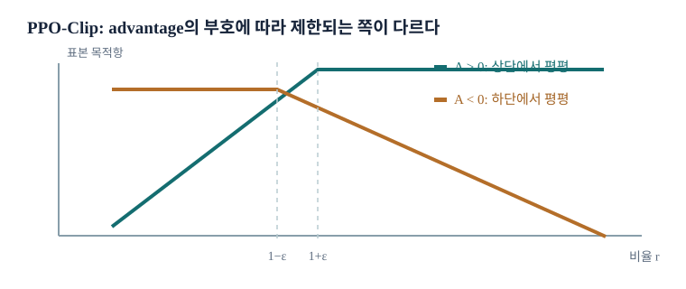

GAE와 PPO
Actor–Critic은 가치 추정으로 정책을 자주 갱신하지만 두 문제가 남는다. 짧은 TD 목표는 critic 오류에 민감하고, 현재 정책의 rollout을 한 번 쓰고 버리면 데이터가 비싸다. GAE는 advantage 추정의 길이를 조절하고, PPO는 수집한 batch에서 여러 번 갱신할 때 정책 변화가 지나치게 커지는 일을 완화한다.
PPO가 해결하려는 문제
PPO는 정책경사, 상태가치 baseline, advantage 추정, 중요도 비율과 제한된 정책 갱신을 결합한다. 핵심은 알고리즘 이름보다 이전 정책에서 얻은 데이터를 현재 정책의 업데이트에 얼마나 안전하게 쓸 수 있는가다.
이미 수집한 rollout을 여러 번 사용하면 환경 상호작용당 계산량을 늘릴 수 있다. 그러나 첫 갱신 뒤 정책이 달라졌으므로 그 데이터는 더 이상 엄밀한 의미의 현재 정책 데이터가 아니다. 이 간격을 계산하고 너무 큰 이득을 억제하는 방식이 PPO의 중심이다.
두 개선 방향
첫째, actor가 쓰는 advantage의 품질을 높인다. 한 단계 TD는 빠르지만 가치함수 오류에 민감하고, 완전한 Monte Carlo 반환은 직접적이지만 분산이 크다. \(n\)단계 반환과 GAE로 사이를 조절한다.
둘째, 하나의 rollout batch에서 여러 번 파라미터를 바꾼다. 중요도 비율로 이전 정책과 새 정책의 행동 확률 차이를 측정하고, 정책이 크게 바뀌었을 때 목적함수가 주는 추가 이득을 제한한다.
정책경사 가중치의 계보
전체 반환, reward-to-go, \(Q^\pi(s,a)\), advantage \(A^\pi(s,a)=Q^\pi(s,a)-V^\pi(s)\)는 모두 점수 함수 \(\nabla_\theta\log\pi_\theta(a\mid s)\)에 곱할 성과 신호다. 각각 과거 보상의 잡음과 상태 난도의 영향을 다르게 제거한다.
실제 PPO에서는 \(A^\pi\)를 정확히 알 수 없으므로 가치망과 관측 보상으로 \(\widehat A_t\)를 만든다. 정책 목적함수의 공식이 정확해도 advantage가 심하게 잘못되면 갱신 방향이 틀릴 수 있다.
REINFORCE가 기다리는 것
REINFORCE의 기본형은 끝난 궤적의 전체 보상으로 정책을 업데이트한다. 장기 과업에서 한 episode가 길고 보상이 마지막에만 있으면 갱신까지 많은 환경 단계가 필요하다. 가치함수가 없으므로 단순하고 설명하기 좋지만 표본 분산이 클 수 있다.
PPO의 개선을 이해할 때 REINFORCE를 단순히 “옛 알고리즘”으로 보면 안 된다. 어떤 편향을 추가해서 데이터 사용을 줄였는지 비교하는 기준선이다.
Actor–Critic의 한 단계
Actor–Critic은 상태가치나 행동가치를 학습해 완전한 episode를 기다리지 않고 미래를 추정한다. actor는 \(\widehat A_t\)의 부호와 크기를 이용해 정책 로그확률을 갱신한다. \(\widehat A_t>0\)이면 관측 행동의 확률을 높이고, 음수면 낮춘다.
critic의 학습 목표가 \(r_t+\gamma V_\phi(s_{t+1})\)처럼 자기 추정에 의존하면 갱신이 빨라지는 대신 편향이 생긴다. 다음 단계는 여러 단계의 실제 보상과 끝의 가치 추정을 섞어 이 절충을 조절한다.
자주 갱신할 수 있다는 뜻
한 episode가 1000단계인데 actor–critic이 10단계마다 가치 추정으로 갱신할 수 있다면 같은 경험에서 훨씬 많은 갱신 기회를 얻는다. 하지만 10단계 뒤의 나머지 결과는 critic에 의존한다. 업데이트 수 증가와 실제 성능 개선은 별개다.
표본 효율은 목표 점수에 도달하는 데 필요한 환경 단계 수로 평가한다. critic의 추정 오차가 크면 잦은 갱신이 오히려 학습을 불안정하게 할 수 있다.
남은 두 약점
짧은 반환 추정은 분산을 낮추지만 가치망이 틀린 만큼 편향될 수 있다. 또한 현재 정책이 만든 데이터만 사용하는 순수 정책경사는 한 번 갱신 뒤 같은 batch를 그대로 재사용하기 어렵다.
GAE는 첫 약점을, 중요도 비율과 PPO 목적함수는 두 번째 약점을 다룬다. 두 기법은 서로 다른 대상을 바꾸므로 분리해 이해하면 구현 오류를 찾기도 쉽다.
$n$단계 반환
\(n\)단계 반환은 실제 보상 \(n\)개를 관측하고 그 뒤의 미래는 가치함수로 대신한다.
\(n=1\)은 빠르지만 가치망을 많이 믿고, \(n\)이 episode 끝까지 가면 실제 반환을 많이 반영한다. 끝 상태가 진짜 종료라면 마지막 부트스트랩 항은 0이다. 어떤 \(n\)이 좋은지는 과업의 보상 지연과 가치망의 정확도에 따라 달라진다.
GAE의 가중 평균과 재귀
GAE는 여러 길이의 \(\widehat A_t^{(n)}\)를 \(\lambda\)로 지수 가중해 하나로 만든다. 한 단계 TD 잔차 \(\delta_t=r_t+\gamma V_\phi(s_{t+1})-V_\phi(s_t)\)를 정의하면 동등한 계산식이 나온다.
\(\lambda=0\)이면 한 단계 TD advantage이고, \(\lambda=1\)에 가까우면 긴 실제 반환을 많이 반영한다. \(\lambda\)를 키울수록 가치 근사에 따른 짧은 지평 편향은 줄 수 있지만 표본 분산은 커질 수 있다. 종료와 시간 제한 처리에 따라 경계항이 달라진다. GAE 논문
GAE를 단순한 평균으로 보면 왜 부족한가?
각 길이의 advantage를 동일 가중으로 평균하지 않는다. \(\lambda\)가 긴 길이의 비중을 지수적으로 조절하고 \(\gamma\)가 보상의 시간 가중을 함께 정한다. 구현은 TD 잔차를 뒤에서 앞으로 재귀적으로 합치는 편이 정확하다.
Advantage 추정과 데이터 재사용은 별개
GAE를 잘 계산해도 actor의 데이터가 어느 정책에서 왔는지는 변하지 않는다. 현재 정책의 rollout에 대해 한 번 갱신하고 나면 같은 상태–행동 표본은 과거 정책 분포의 자료가 된다.
반대로 중요도 비율로 분포를 보정해도 advantage가 엉터리면 학습 방향은 좋지 않다. PPO 구현에서는 가치망 목표와 GAE, 이전 행동 로그확률의 저장을 따로 검증해야 한다.
왜 현재 정책 데이터가 필요한가
기본 정책경사의 기대값은 \(\tau\sim p_\theta\)에 대한 것이다. 파라미터를 \(\theta\)에서 \(\theta'\)로 바꾸면 원하는 기울기는 \(E_{\tau\sim p_{\theta'}}\)가 되지만 손에 든 batch는 여전히 \(p_\theta\)에서 왔다.
정책 변화가 작으면 근사적으로 쓸 수 있어도 여러 업데이트를 반복하면 차이가 커진다. 단순히 같은 로그확률 손실을 여러 번 줄이는 것은 원래 유도의 표본 가정을 벗어난다.
중요도 샘플링의 기본식
분포 \(q(x)\)에서 뽑은 표본으로 \(p(x)\)의 기대값을 계산하려면 \(p(x)/q(x)\)를 곱한다.
이 식이 성립하려면 \(p(x)>0\)인 곳에서 \(q(x)>0\)이어야 한다. 즉 이전 정책이 전혀 선택하지 않은 행동에 대해서는 데이터 재가중만으로 새 정책의 결과를 알 수 없다. 비율이 지나치게 크면 추정량의 분산도 커진다.
궤적 비율에서 행동 비율로
같은 환경에서 이전 정책과 새 정책이 만든 궤적 확률의 비를 취하면 초기 상태와 전이 항이 상쇄되고 정책 행동 확률의 비만 남는다.
이 전체 곱을 쓰면 오래된 데이터로 새 정책의 기대값을 재가중할 수 있지만, 긴 궤적에서는 작은 비율 차이가 곱해져 분산이 폭발할 수 있다. PPO에서 쓰는 시점별 비율 \(r_t(\theta)\)은 이런 정확한 전체 궤적 보정과 같지 않은 실용적 surrogate의 구성 요소다.
여러 갱신에서 이전 정책 고정하기
rollout 직후 행동마다 \(\log\pi_{\mathrm{old}}(a_t\mid s_t)\)를 저장하고, 갱신 중에는 이 값을 고정한다. 현재 정책의 로그확률과 차이를 계산해 \(r_t(\theta)=\exp(\log\pi_\theta-\log\pi_{\mathrm{old}})\)를 만든다. 이것이 이전 데이터에 대한 정책 변화 측정이다.
같은 batch를 여러 epoch 학습하려면 분모를 업데이트마다 새로 계산하면 안 된다. 그러면 “수집 당시 정책과 지금 정책”의 비가 아니게 된다. 중요도 비율은 계산만으로 안정성을 보장하지 않아 추가적인 갱신 제어가 필요하다.
큰 중요도 비율과 정책 변화
좋은 결과를 낸 행동의 확률을 계속 높이면 \(r_t=\pi_\theta(a_t\mid s_t)/\pi_{\mathrm{old}}(a_t\mid s_t)\)가 커진다. 한 batch를 반복 학습할수록 몇 표본의 큰 비율이 손실과 기울기를 지배하고, 그 표본을 낳은 상태 분포와 새 정책의 상태 분포도 멀어진다. 따라서 비율을 계산하는 것과 안정적으로 갱신하는 것은 다른 문제다.
파라미터 거리 \(\|\theta-\theta_{\mathrm{old}}\|\)는 정책 거리의 좋은 대리변수가 아닐 수 있다. 신경망에서는 작은 파라미터 이동도 출력 확률을 크게 바꿀 수 있기 때문이다. TRPO는 정책 간 KL 발산을 제한하는 신뢰영역 관점을 쓰고, PPO는 훨씬 간단한 목적함수의 clipping으로 큰 변화를 억제한다. PPO clipping은 KL 제약을 엄밀하게 보장하지 않는다. TRPO, PPO
PPO를 구성하는 네 조각
PPO-Clip은 actor–critic의 가치 추정, GAE advantage, 수집 당시 정책에 대한 행동 확률 비율, 그리고 비율 clipping을 결합한다. 출발점은 수집 정책 아래 표본 평균으로 쓴 surrogate \(\widehat L(\theta)=\frac1N\sum_t r_t(\theta)\widehat A_t\)다. \(\widehat A_t>0\)인 행동은 더 자주, 음수인 행동은 덜 자주 선택하도록 밀어 주지만, 이 선형식만 반복 최적화하면 비율이 과하게 변한다.
여기서 \(\widehat A_t\)는 rollout과 critic으로 미리 계산한 값으로 취급한다. actor 손실을 미분할 때 advantage 계산 그래프까지 역전파하는 구현과는 다르다. critic은 별도의 회귀 목표로 갱신한다. PPO 원논문
Advantage 부호에 따른 clipping 직관
\(\widehat A_t>0\)이면 \(r_t\)를 키우는 방향이 이 표본의 목적을 높인다. \(r_t>1+\epsilon\)부터는 보상을 더 올려 주지 않도록 상한 \((1+\epsilon)\widehat A_t\)를 둔다. 반면 \(\widehat A_t<0\)이면 \(r_t\)를 낮추는 방향이 목적을 높인다. \(r_t<1-\epsilon\)부터는 추가 이득을 주지 않도록 하한 비율 \(1-\epsilon\)에서 멈춘다.
부호 때문에 두 경우를 단순히 같은 min 또는 max 비율 식으로 외우면 오류가 난다. 예를 들어 \(\widehat A=-2\), \(r=0.5\), \(\epsilon=0.2\)이면 원래 항은 \(-1\)이고 제한한 항은 \(-1.6\)이다. 최대화에서 더 보수적인 값 \(-1.6\)을 택해야 하므로 다음 슬라이드의 두 곱의 min 형태가 필요하다.
하나의 PPO-Clip 목적함수로 합치기
두 부호를 한 식으로 묶으면 다음과 같다.
양의 advantage에서는 비율 상단, 음의 advantage에서는 비율 하단의 추가 이득이 잘린다. clipping 범위를 벗어난 모든 표본의 기울기가 0이 되는 것은 아니다. 예컨대 양의 advantage인데 비율이 지나치게 작으면, 목적은 확률을 회복시키도록 여전히 기울기를 준다. min은 과도하게 유리한 변화만 제한하는 보수적 surrogate다. PPO 원논문
비율을 자르면 새 정책이 반드시 가까운가?
아니다. 표본에서 목적의 유리한 방향을 자르는 장치다. 관측하지 않은 상태에서 정책이 크게 변할 수도 있고, 실제 KL이 커질 수도 있다. 실무에서는 평균 KL을 모니터링하거나 조기 중단을 더한다.

PPO 학습 반복의 순서
현재 정책으로 rollout을 수집하고 행동 로그확률, 보상, 상태, 종료 여부를 저장한다. critic으로 가치와 GAE를 계산한 다음 수집 정책을 \(\pi_{\mathrm{old}}\)로 고정한다. 동일 batch를 여러 epoch와 minibatch에 나누어 \(L^{\mathrm{CLIP}}\)를 최대화하고, 가치 손실과 정책 엔트로피 보너스를 함께 학습한다. 이후 새 정책으로 다시 rollout을 수집한다.
엔트로피 \(H(\pi(\cdot\mid s))=-\sum_a\pi(a\mid s)\log\pi(a\mid s)\)는 정책이 너무 일찍 한 행동으로 수렴하지 않도록 한다. 연속 행동에서는 해당 밀도의 미분 엔트로피를 쓴다. 가치 손실·엔트로피 계수의 스케일은 보상 스케일과 함께 점검해야 한다. 코드에서 분모의 old log probability를 매 epoch 재계산하면 알고리즘이 달라진다.
PPO가 널리 쓰이는 이유와 한계
같은 clipping 식이 이산 행동과 연속 행동의 정책 로그확률에 적용되고, 여러 환경을 병렬 실행해 rollout을 모으기 쉽다. 구현의 핵심도 복잡한 제약 최적화 대신 보통의 경사 최적화로 표현된다. 그래서 로봇 제어와 언어모델 학습을 포함한 여러 맥락에서 출발점으로 쓰인다.
그렇다고 기본값만으로 안정적이라는 뜻은 아니다. rollout 길이, minibatch 크기, 업데이트 epoch 수, 학습률, \(\epsilon\), GAE \(\lambda\), entropy 계수, 보상/advantage 정규화에 따라 결과가 바뀐다. 재현할 때는 평가 환경을 학습 환경과 분리하고 여러 seed의 평균과 분산을 함께 보고한다.
접촉이 많은 로봇 조립
Factory는 볼트와 너트 등 접촉이 복잡한 조립 과제를 고속 시뮬레이션으로 다룬다. 정책은 손끝 위치만 맞추는 것이 아니라 충돌, 마찰, 접촉력 변화 속에서 부품을 끼워야 한다. 보상 설계와 물리 모델, 많은 병렬 환경이 정책 최적화의 실제 성패에 영향을 준다는 사례다. 슬라이드의 시연은 PPO 계열 방법이 고차원 연속 제어에 쓰일 수 있음을 보여 주지만, 영상 하나가 현실 전이의 일반적 성공을 입증하지는 않는다. Factory 논문
조립은 왜 단순한 위치 제어보다 어려운가?
부품이 닿는 순간 동역학이 급격히 바뀌고, 관측 오차가 작은 힘 차이로 증폭된다. 궤적 추종만으로는 마찰과 공차를 흡수하기 어려워 피드백과 접촉 상태 추정이 필요하다.
SAPG와 병렬 학습
Split and Aggregate Policy Gradients는 병렬 환경을 여러 묶음으로 나눠 정책을 학습한 뒤 중요도 샘플링으로 정보를 결합한다. PPO가 병렬 환경 수를 계속 늘려도 이득이 포화될 수 있다는 문제의식에서 출발한다. 동일한 총 환경 상호작용 수라면 병렬 worker 수만 늘렸다는 이유로 표본 효율이 향상된 것은 아니다. 벽시계 시간, 총 시뮬레이션 step, 최종 성능을 분리해 비교해야 한다. SAPG 논문
사족 보행의 실제 로봇 시연
Unitree 로봇 시연은 정책의 출력이 매 제어 주기 모터 명령 또는 목표 관절값으로 이어진다는 점을 상기시킨다. 보행 학습에서는 전진 속도만 키우면 넘어져도 높은 순간 보상을 얻는 편법이 생길 수 있다. 자세 안정성, 토크와 에너지, 발 미끄러짐, 명령 추종 등을 함께 평가해야 한다. 학습은 보통 대량 병렬 시뮬레이션을 사용하고 실기에 옮길 때 센서 지연과 동역학 차이를 고려한다.
보행을 넘어서는 전신 제어
전신 제어에서는 이동과 팔 조작, 균형 유지가 결합된다. 한쪽 팔이 물체를 들면 질량중심이 바뀌고 다리의 제어 목표도 달라진다. 따라서 개별 동작의 성공 영상만 보고 “범용” 정책이라고 판단하기보다 낯선 물체·지형·외란에서 성공률을 확인해야 한다. 시뮬레이션에서 배운 제어기는 실기로 옮길 때 마찰, 무게, 지연 등을 무작위화해 여러 가능성에 견디도록 훈련하는 경우가 많다.
조작 정책 시연을 읽는 법
로봇 조작 영상에서는 결과뿐 아니라 입력 관측, 목표, 행동 주기, 실패 후 재시도 여부를 확인해야 한다. 예를 들어 컵을 잡는 정책의 높은 성공률도 컵의 크기와 배경이 고정된 실험인지, 보지 못한 물체로 일반화하는지에 따라 의미가 다르다. RL이 담당하는 부분은 보상과 상호작용을 이용한 정책 개선이며, 비전 표현이나 초기 행동은 모방학습에서 가져올 수도 있다. 시연은 학습법의 가능성을 보여 주지만 독립 평가의 대체물은 아니다.
사람 피드백과 언어모델
InstructGPT에서는 여러 후보 답변에 대한 사람의 선호 비교로 보상모델을 학습한 뒤, 언어모델 정책을 PPO로 조정했다. 상태는 지금까지의 프롬프트와 생성 토큰, 행동은 다음 토큰으로 볼 수 있다. 완료된 답변에 주어진 보상을 토큰별 정책 업데이트에 연결하되, 기준 모델과의 KL 패널티로 언어 분포가 지나치게 이탈하지 않게 한다.
로봇의 물리 보상과 달리 선호 보상은 보상모델의 예측이다. 정책이 이 예측의 허점을 찾으면 사람이 좋아하지 않는 문장에 높은 점수를 받을 수 있으므로 별도의 사람 평가가 중요하다. 이 사례가 모든 후속 언어모델에 동일한 학습 절차가 적용된다는 뜻은 아니다. InstructGPT 논문
왜 다음은 off-policy인가
PPO는 한 rollout batch를 몇 번 재사용하지만, 새 정책이 수집 정책에서 너무 멀어지면 자료를 버리고 다시 모아야 한다. 서로 다른 과거 정책의 방대한 replay buffer를 자유롭게 활용하는 방식과는 다르므로 보통 on-policy 계열로 분류한다.
Q-learning과 DQN은 행동 정책과 다른 greedy 정책의 가치를 학습할 수 있다. DDPG·TD3·SAC는 연속 행동에서 replay를 활용한다. 다음 장의 핵심 질문은 새 정책의 행동을 실험하지 않은 전이 자료만으로 어떻게 평가하고 개선할 것인가다.